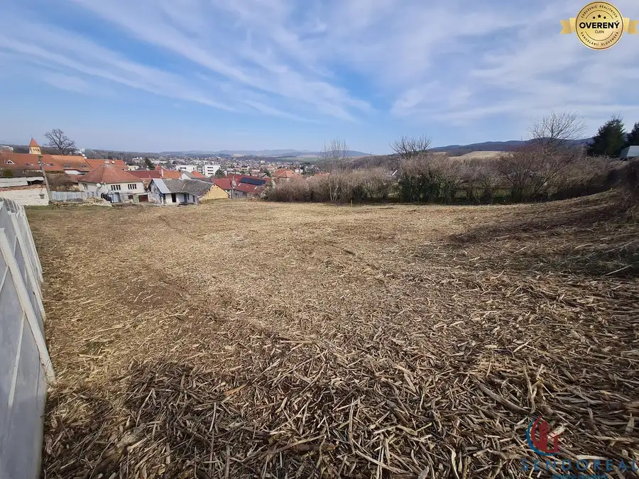
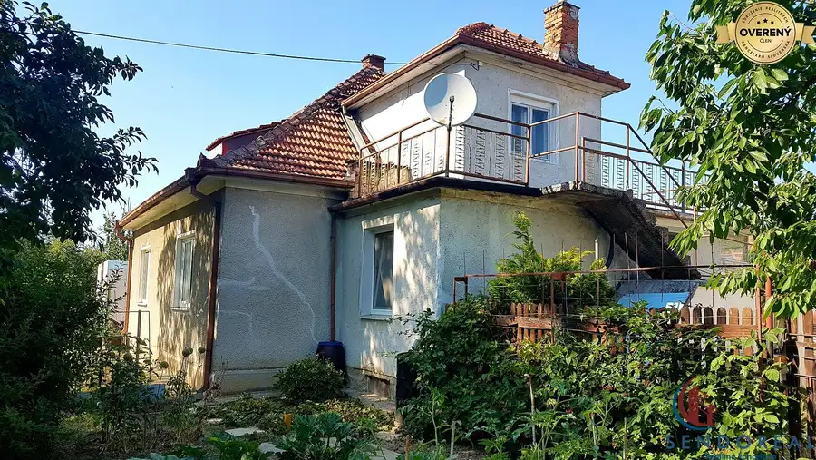
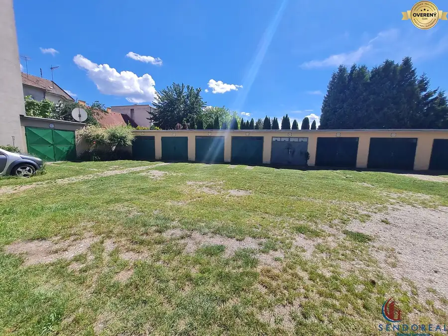
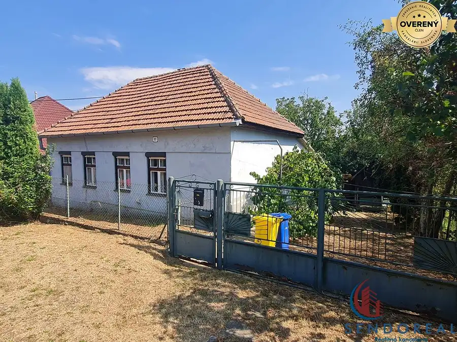
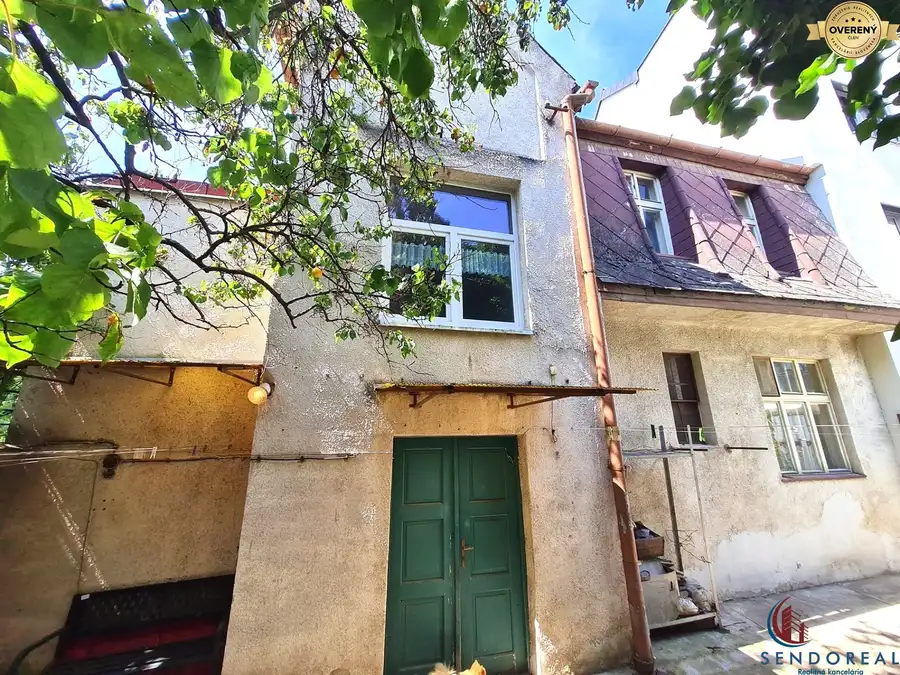
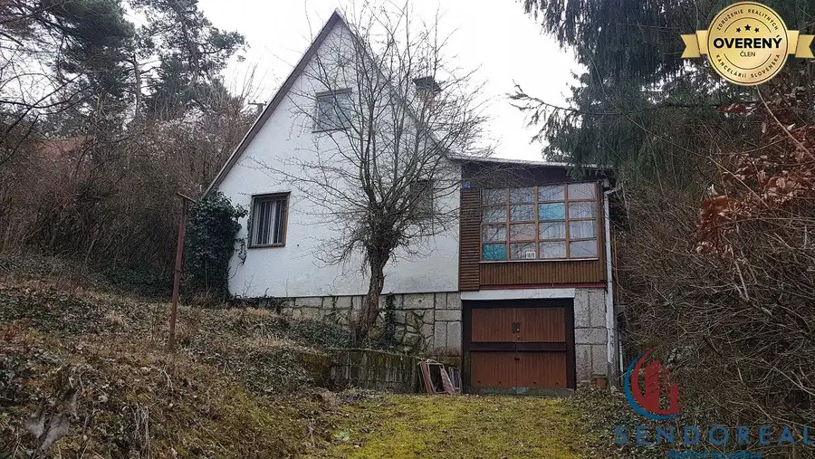
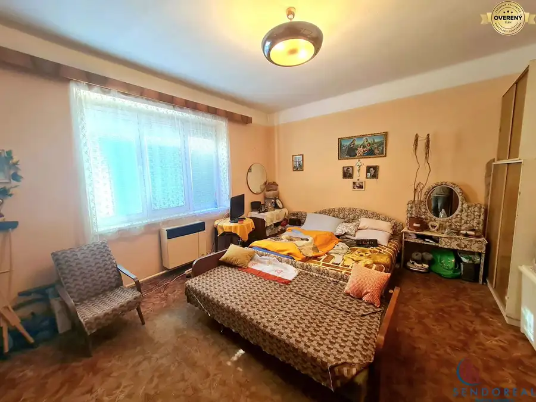
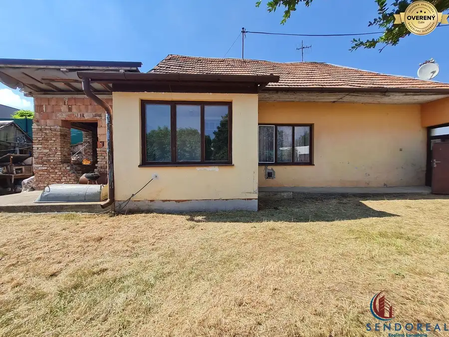

Aktuálna ponuka
Nehnuteľnosti, ktoré ponúkam
8 nehnuteľností na predaj a prenájom. Vyberte typ, alebo napíšte lokalitu.
8 z 8 ponúk

Pozemok3 194 760 €Výnimočný Slnečný pozemok Banka 1623m Banka 1623 m² Predáme krásny slnečný pozemok o výmere 1623m, všetky IS sú pred pozemkom. Pozemok o šírke cca 28m a dĺžke 60m. Pozemok je mierne svahovitý, s pekným…
Rodinné domy10 235 000 €4.izbový rodinný dom pozemok 989 Piešťany 4-izbový100 m² Predáme 4.izbový rodinný dom. Dom je postavený na železobetónových základoch, obvodové murivo 40cm z pálenej tehly. Pozostáva zo vstupnej chodby, 3.…
Ostatné3 26 000 €Murovaná garáž 19m2 SNP CENTRUM Piešťany 19 m² Predáme murovanú garáž blízko centra pri parku, Námestie SNP. Garáž je o výmere 19m2, oceľová brána je manuálna, súčasťou je montážna jama.
Rodinné domy10 84 000 €RD Otrokovce 1071m pozemok Dolné Otrokovce 2-izbový82 m² Predáme exkluzívne rodinný dom, pozostáva z 2. izieb, kuchyne, komory, kúpeľne s wc, chodby, garáže a dielne. Kuchyňa by sa dala zväčšiť o priestor…
Rodinné domyRezervované10 285 000 €Historický 7.izb RD CENTRUM Piešťany Piešťany 7-izbový160 m² Ponúkame na predaj historický rodinný dom v srdci Piešťan, ktorý sa nachádza na Štúrovej ulici, len pár krokov od parku. Tento dvojpodlažný dom,…
Rodinné domyRezervované10 64 000 €Dvojpodlažná chata Striebornica Moravany nad Váhom 3-izbový86 m² Ponúkame na predaj dvojpodlažnú murovanú chatu v malebnej lokalite Striebornica, ktorá sa nachádza v blízkosti obce Moravany nad Váhom, okres…
BytRezervované10 96 000 €2.izb byt ul. Díčová Piešťany Piešťany 2-izbový59 m² Predáme prízemný 2.izbový byt o výmere 59m s predzáhradkou v užívaní o výmere 100m. Byt sa nachádza v bytovom prízemnom dome kde je celkovo…
Rodinné domyRezervované10 89 000 €Slnečný rodinný dom Vrbové 1-izbový79 m² Predáme 1.izbový rodinný dom postavený z pálenej tehly, dom je celý v pôvodnom stave vhodný na prerábku podľa vlastnej predstavy. Pozostáva zo…Tomuto výberu zatiaľ nezodpovedá žiadna ponuka. Napíšte mi, čo hľadáte.